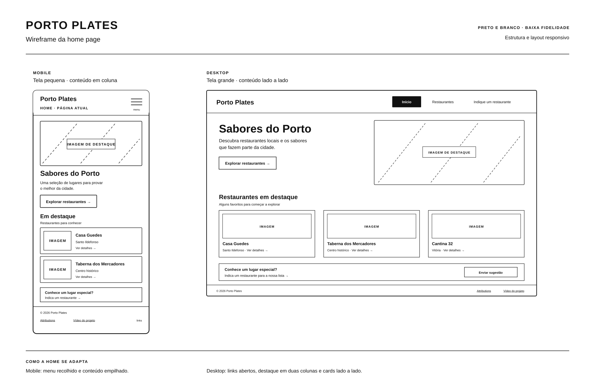

Site Name
Porto Plates
- The name says exactly what the site is about: the food ("plates") of Porto, Portugal. It is short, easy to remember, and the repeated "P" sound makes it catchy for branding.
- Optional domain:
portoplates.pt
Site Purpose
Porto Plates is a guide to traditional restaurants, taverns (tascas) and signature dishes in Porto. The site lists at least fifteen local places with their neighborhood, price range, signature dish and opening hours, lets visitors filter places and save favorites, shows details in a dialog, and offers a form where visitors can suggest a new place to be added to the guide.
Scenarios
- Where can I try an authentic francesinha near the Ribeira?
- Which traditional restaurants in Porto fit a low budget?
- What typical dishes should I try on my first visit to Porto?
- How can I recommend a family-owned tasca that is not listed yet?
Color Scheme
The palette is inspired by Porto's blue azulejo tiles and port wine.
Azulejo Blue #1F3A68
Header, footer, navigation background and headings.
Port Wine #8C1C3A
Accents: buttons, links, active nav item (wayfinding) and card borders.
Cream #FAF7F2
Page background and text on dark backgrounds.
Ink #222222
Paragraph and body text.
Typography
Playfair Display — Francesinha & Tripas
Used for the site name/logo text and all headings (h1–h3).
Source Sans 3 — Opening hours: 12:00–23:00 · Price: €€
Used for body text, navigation, cards, buttons and form fields.
Wireframe — Home Page
